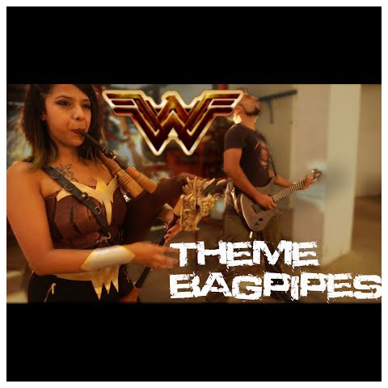

Pirates of the Caribbean Theme Song is here and it's got a Sick new movie Pirates of the Caribbean 5 Dead men tell no tales up! "He's a Pirate" is a theme we all love. Here is for you a one of a kind Bagpipes & Cello cover of Pirates of the caribbean theme song done by The Snake Charmer
Cello - Avery Waite
Music - Karan Katiyar
Shot & Edited - Karan Katiyar
Bagpipes - Archy Jay
Game of Thrones Theme Cover
Game of Thrones is one of the Most watched Tv shows . Since Bagpipes are so Medieval they go really well with the whole Game of thrones theme song . Watch and Enjoy ! Dont forget to Buy the track if you liked it
Attack on titan opening "Guren No Yumiya" (opening 1) Shinzou wo Sasageyo (opening 3) are my favourite from the popular Shingeki no Kyojin Anime theme series . This my first Anime Opening cover played on the Bagpipes, and i decided to make it in a Metal Version .
Music Produced By - Karan Katiyar
Bagpipes by - Archy Jay
Wonder Woman Cover

Wonder Woman Theme Song is really rad and it gives me chills! Since the wonder woman movie is out and it was awesome, i decided to do a the song "Is she with you" as the Wonder Woman Theme cover but in a Metal Version. I dressed almost as the Wonder Woman with a costume that was made at home. Oh Yeah!
Shot by - Powell Kumar
Edited by - Karan Katiyar
Bagpipes - Archy Jay
Galway Girl Cover
Galway Girl is my favourite Ed Sheeran song especially because it has a celtic touch! This is a Bagpipe version of this song. Me and my friends went on a road trip to the hills and shot this video for you all. For the first time, i show you some insides of my life, friends.